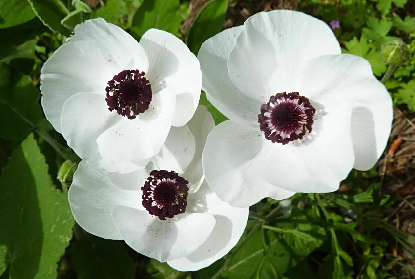

花卉与草本 · 植物界
花毛茛 Ranunculus asiaticus

毛茛科多年生块根草本，重瓣花朵层层叠叠如牡丹，色彩柔美，是春季花坛与切花的明星，原产地中海与西亚。
- 分类
- 门被子植物门纲木兰纲目毛茛目科毛茛科属毛茛属
- 栖息环境
- 地中海沿岸与西亚的向阳坡地，喜凉爽、阳光充足
- 地理分布
- 原产地中海沿岸与西亚，现世界各地栽培，中国云南等地种植较多
- 保护级别
- 暂无评估
物种志
花毛茛为毛茛科毛茛属多年生草本，株高 20–50 厘米，地下具纺锤状块根。叶片羽状分裂，裂片有齿。花单生或数朵聚生，花径 5–10 厘米，有红、粉、黄、白、橙等色，重瓣品种花瓣层层叠叠，形似小牡丹，花期 3–5 月；果实为瘦果。
花毛茛原产地中海沿岸和西亚，喜凉爽、阳光充足和排水良好的环境，夏季高温时块根休眠，秋凉后重新萌芽。它花形饱满、色彩丰富，重瓣品种形似牡丹，因此有“洋牡丹”之称，是春季花坛和切花的重要材料。栽培以块根种植为主，需用疏松透气的土壤，忌积水；块根在夏季休眠期应挖出放在阴凉处贮藏，秋季再种；花后剪去残花可减少养分消耗。
形态与习性
- 株高20–50 厘米，具纺锤状块根
- 花期3–5 月
- 果期花后结瘦果
- 光照喜充足阳光
- 水分喜湿润，忌积水
- 土壤疏松透气、排水良好的壤土
- 繁殖块根分株、播种
- 主要用途花坛、切花、盆栽
趣味知识
- 花毛茛重瓣品种的花瓣层层叠叠，形似小牡丹，因此有“洋牡丹”之称。
- 它夏季高温时块根休眠，秋凉后才重新萌芽。
- 花毛茛原产地中海和西亚，喜凉爽而不耐酷热。
- 栽培时土壤需疏松透气，积水容易导致块根腐烂。